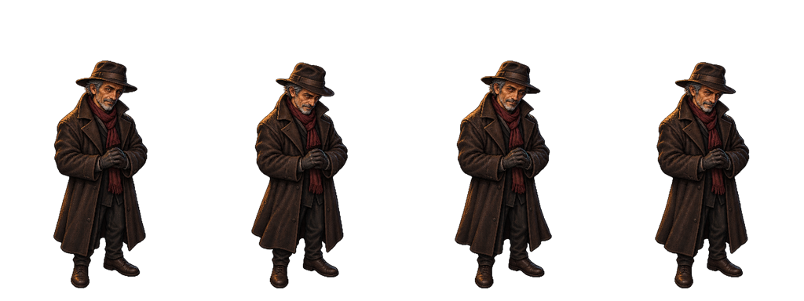
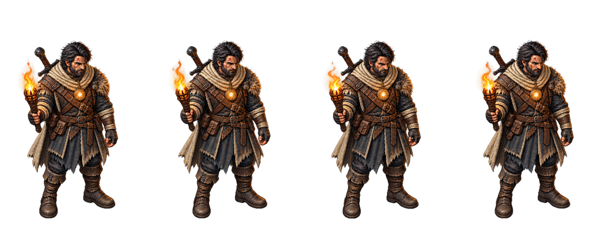

DRAFT v01 · AO01/ER01 v01 · 18 tiras/101 quadros aceitos anteriormente. Nenhuma admissão executada.
SHA-256 7b77f90efb3ce5f2266ad7569bbcfb52b91fe0225df6ea80c04070d4d7f9750e
Idle DRAFT aceito (body-pivot-v01/candidates-v02):

Avaliar rosto, idade/porte, vestuário, acessórios, luz e acabamento. Aceite visual e promoção CANON não são inferidos desta comparação.

SHA-256 0551a2b2059a970c8df8c8452a3af77704371f98acea5a0dda223cb2dd750d07
Idle DRAFT aceito (body-pivot-v01/candidates-v02):

Avaliar rosto, idade/porte, vestuário, acessórios, luz e acabamento. Aceite visual e promoção CANON não são inferidos desta comparação.
| Código | Destino | Quadros | Célula candidata |
|---|---|---|---|
| AO02 | assets/animations/heroes/arlindo/idle.png | 4 | 256×384 |
| AO03 | assets/animations/heroes/arlindo/move_e.png | 6 | 256×384 |
| AO04 | assets/animations/heroes/arlindo/move_se.png | 6 | 256×384 |
| AO05 | assets/animations/heroes/arlindo/move_s.png | 6 | 256×384 |
| AO06 | assets/animations/heroes/arlindo/move_ne.png | 6 | 256×384 |
| AO07 | assets/animations/heroes/arlindo/move_n.png | 6 | 256×384 |
| AO08 | assets/animations/heroes/arlindo/attack.png | 4 | 512×512 |
| AO09 | assets/animations/heroes/arlindo/active.png | 6 | 512×512 |
| AO10 | assets/animations/heroes/arlindo/death.png | 6 | 512×512 |
| ER02 | assets/animations/heroes/erik/idle.png | 4 | 256×384 |
| ER03 | assets/animations/heroes/erik/move_e.png | 7 | 256×384 |
| ER04 | assets/animations/heroes/erik/move_se.png | 6 | 256×384 |
| ER05 | assets/animations/heroes/erik/move_s.png | 6 | 256×384 |
| ER06 | assets/animations/heroes/erik/move_ne.png | 6 | 256×384 |
| ER07 | assets/animations/heroes/erik/move_n.png | 6 | 256×384 |
| ER08 | assets/animations/heroes/erik/attack.png | 4 | 512×512 |
| ER09 | assets/animations/heroes/erik/active.png | 6 | 512×512 |
| ER10 | assets/animations/heroes/erik/death.png | 6 | 512×512 |
O runtime atual usa célula única 384×384 por herói; as candidatas misturam 256×384 e 512×512. Não copiar diretamente. O plano propõe derivados 512×512 sem redimensionar corpo, alinhando base e centro por translação validada.